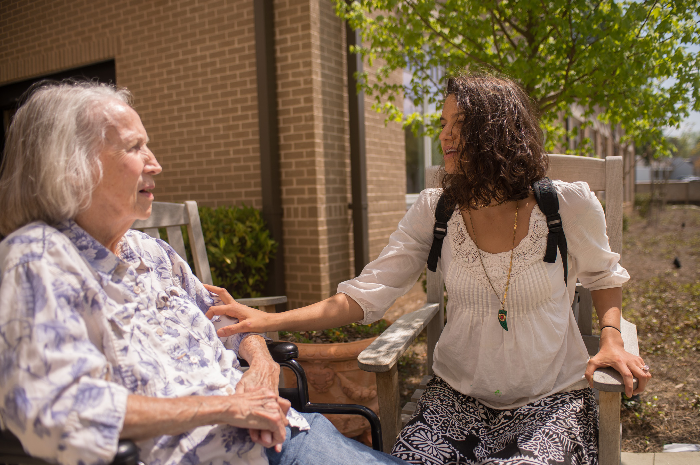
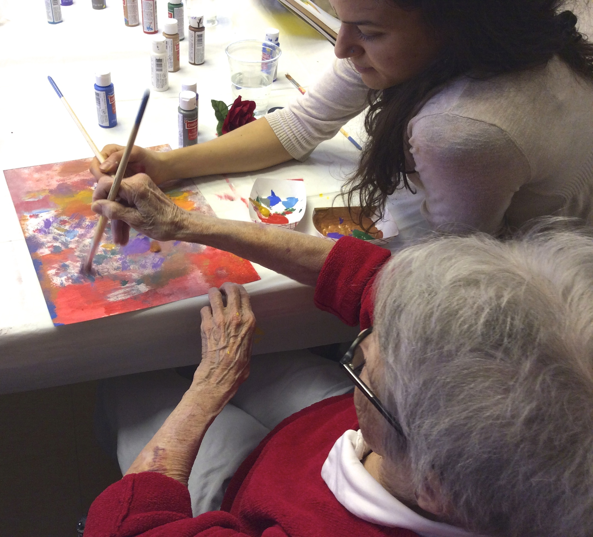

Meet Meagan, our Founder and Executive Director


Meagan E. Jain is a thought leader in the movement of “bringing the awesome out of aging.” Meagan’s passion for connecting generations began as a hospice volunteer when she was attending Georgia State University as an undergraduate student. While visiting those on hospice, typically adults 65+, Meagan noticed how little those close to her age were interacting with adults 65+. She felt a calling to connect generations by creating unique ways for people to share their humanity with each other. Meagan endeavors to help young people see that simply because you are older, does not mean you are different. Meagan also works to tap into the resources of Elder adults, given they are a wealth of experience, knowledge, and plain ol’ awesomeness. Meagan has traveled around the southeast presenting research on the social construction of aging and how media influences young adult perceptions of age. She is currently working towards her Masters in Gerontology from Georgia State University. She hopes to help Western societies embrace the natural process of aging so we can begin to live in a more age positive society. Meagan is also an artist, plant-based chef, and voracious reader.